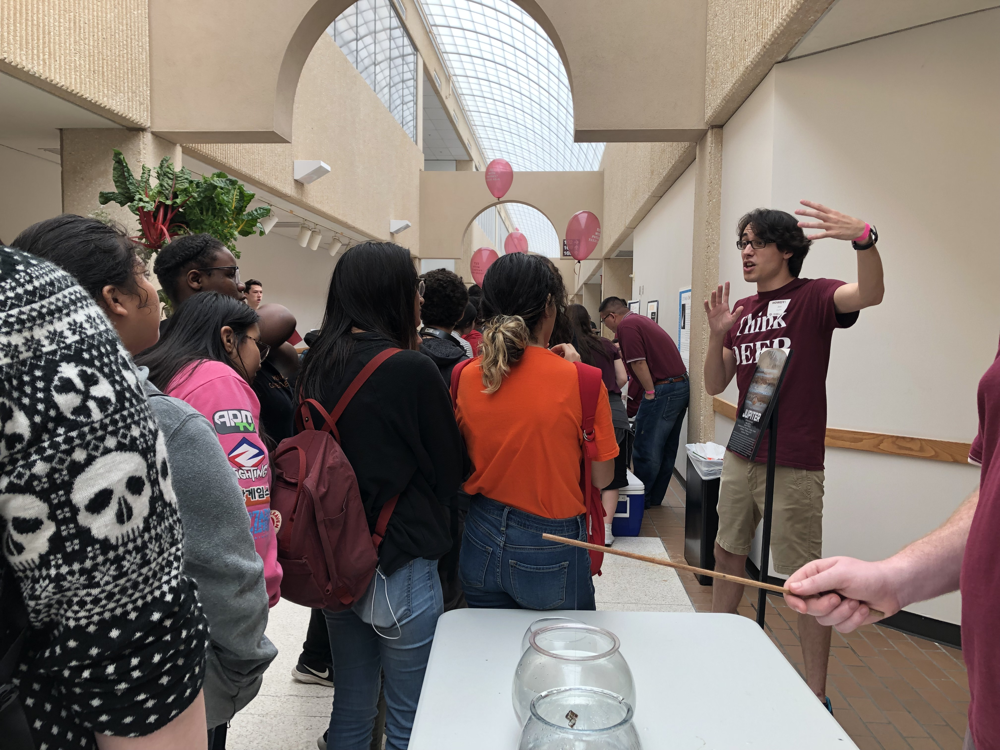

Outreach
I love outreach and science communication, and I am determined to continue leading outreach efforts in my local community throughout my career.
Astronomy on Tap, BCS
Astronomy on Tap BCS is a chapter of Astronomy on Tap (AoT), located in Bryan, Texas. AoT is a series of free, public science presentations hosted by astronomers, typically at bars. Alongside several astronomy graduate students at Texas A&M, I co-founded the BCS chapter in Spring 2018, and we have held monthly events ever since! I served as an organizer, host, panelist, trivia author, and an occasional speaker at our events, until I moved away from Texas in 2023. Events are currently hosted at the 101.
Previously, we held events at Revolution Cafe and Bar and the Grand Stafford Theater in Bryan. During the COVID-19 pandemic, we started livestreaming our events on youtube at tx.ag/aotlive. You can watch our past events here and subscribe to our youtube channel! One of my talks, where I discuss space exploration — including both the science and ethics of exploration — is available here! You can also follow us on Facebook, Twitter, and Instagram for up-to-date news on upcoming events!
Discover, Explore, and Enjoy Physics and Engineering (DEEP)
Discover, Explore and Enjoy Physics and Engineering (DEEP) is an outreach, mentorship, and demonstration-building organization at Texas A&M. I served as a graduate student mentor in DEEP for four years, from 2017–2021.
As a mentor, I worked with a small group of undergraduate students, helping them create, build, and repair astronomy, physics, and engineering demonstrations. These demonstrations are displayed to the public in physics shows throughout the year and are also often used in undergraduate courses. DEEP graduate and undergraduate students also display their demos in other outreach events hosted on campus and in the Bryan/College Station community throughout the year.
Additionally, DEEP mentors and students help host the annual Physics & Engineering Festival every April, during which thousands of people from across the United States visit Texas A&M to see hundreds of demos. In 2021, due to the COVID pandemic, I helped host the first ever virtual Physics Festival over Zoom.